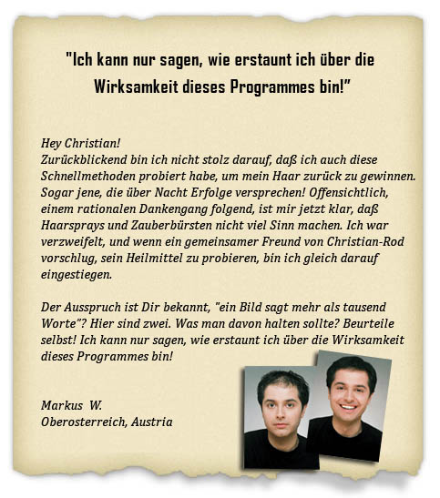
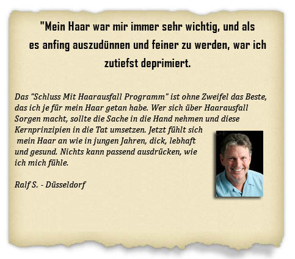
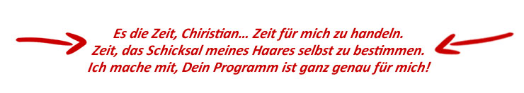

Die Effektivste Natürliche Therapie, die je gegen Haarausfall entwickelt wurde!

Lieber Freund! Ich verstehe sehr wohl, was Dich heute hierher gebracht hat. Ich habe dieselbe Erfahrung gemacht, wenn ich mit einem Blick in den Spiegel jedes Mal weniger Haar bemerkt habe und mich gewundert habe, wieviele Jahre oder nur Monate mir mein Haar noch treu bliebe. Du bist nicht allein… Und wenn es eine einfache und preiswerte Methode gibt, die verhindert, daß diese kahlen Stellen noch größer werden und sogar verspricht, Haar nachzuwachsen wo Du jede Hoffnung aufgegeben hast? Wenn Du Haarausfall stoppen willst und das meiste Haar, wenn nicht alles nachwachsen möchtest, dann ist dies ohne Frage der wichtigste Brief den Du je lesen wirst.
Warum Sie nie über natürliche Haarbehandlung hören
Es ist wirklich kein Geld zu holen. Alle diese unnatürlichen Methoden, Haar mit aggressiven, chemischen Wirkstoffen und umverpflanzten Transplantaten zurückzugewinnen, bringen gigantischen Konzernen jährlich Milliarden und bessern das Einkommen Ihres Arztes auf.
Die schlimmste Lüge der Haarausfall Industrie
Eine neue Studie im Spiegel zeigte auf, daß Deutsche mehr als 2,5 MILLIARDEN EUROS für Verschreibungen, Prozeduren und “Wunderprodukte” gegen Haarausfall ausgeben.
Aber der haarsträubende Aspekt ist, daß 99% dieser Behandlungen keine Erfolge erzielen – und die restlichen 1% nur für ein paar Auserwählte funktionieren.
Also… warum können diese Konzerne 2,5 Milliarden Euros wert an unwirksamen Produkten verkaufen?
Beim nächsten Mal im Drogeriemarkt, finden Sie das populärste Haarausfall Produkt und lesen Sie den Packungstext. In fast übersehbarem Kleindruck wird über Resultate informiert: “…Patienten, die Verbesserung wahrnehmen…”
Ich möchte Sie fragen … Wollen Sie Resultate wahrnehmen? Oder tatsächliche Resultate erzielen?
Es ist sehr offensichtlich, diese Produkte verkaufen nur 2,5 Milliarden Euros HOFFNUNG……nicht Resultate.
Ich möchte Ihnen eine andere Frage stellen … hat jemand in Ihrem Bekanntenkreis jemals eines dieser Produkte benutzt –ob verschrieben oder rezeptfrei – und tatsächlich Haarwuchs belebt?
Ich getraue mich zu wetten, daß Sie genug Leute kennen, die hunderte – sogar tausende Euros an diesen Produkten verschwendet haben, weil sie hofften, es würde einen Unterschied machen.
Ganz ehrlich, wenn Sie alle diese Möglichkeiten, die Ihnen Haarwachstum versprechen, genauer untersuchen, wird Ihnen auffallen, daß sie oft riskant sind, das Ergebnis oft alles andere als erhofft und der Preis sehr, sehr teuer ist.
Wenn Sie für diese Produkte Geld ausgeben, haben Sie nur die Hoffnung, daß sie sich bezahlt machen.
Aber Sie brauchen mehr als nur Hoffnung…
Sie brauchen greifbare Ergebnisse. Und Sie brauchen klare, ehrliche Antworten.
Hier werden Sie die Wahrheit entdecken, was hinter Haarausfall steckt und wie dieses WISSEN Ihnen zu neuem Wachstum verhelfen kann – natürlich...
So haben sich die Tatsachen für Andre präsentiert

Das Gefühl der Verzweiflung und Hilflosigkeit es nicht aufhalten zu können, das Schamgefühl wenn eine Kappe herhalten musste, diesen kahlen Fleck abzudecken.
Falls Ihnen alle das etwas vertraut vorkommt, dann ist dies die wichtigste Seite, die Sie je lesen werden…..
Warum glauben Sie, verlieren Sie Haar?
Vererbung? Alter? FALSCH!
Hier sind die Gründe warum Sie Haar verlieren.
Haarausfall ist die Folge von beschädigten Haarwurzeln, verstopften Poren und schlechter Blutzirkulation, verursacht durch Stress.
Die Pflege Ihrer Kopfhaut ist der Schlüssel zum Erfolg. Lesen Sie diese Anleitung und wenden Sie die Pflegetipps für Ihre Kopfhaut an.
Haben Sie jemals einen kahlköpfigen Eingeborenen gesehen?
Ich konnte nicht glauben, daß ich es nicht gleich momentan als ich meinen Fuß in ihr Dorf setzte, realisiert hatte: Männer, Frauen, Kinder, Leute jeden Alters; Sie alle hatten Haare, und großartiges Haar!
Im Gegenzug für meine Leistung, wofür sie mir Dank erweisen wollten, boten sie mir an, mit meinem “Problem” auszuhelfen.
Natürlich, ich war skeptisch, nach allem was ich schon probiert hatte, sicher, ein kostenloses Heilmittel würde nicht schaden, oder?
Also ließ ich das “Programm” über mich ergehen, ein geheimnisvolles Gebräu auf meiner Kopfhaut und Massage Anwendungen um das Wachstum zu stimulieren…
Ich hatte mir damals nicht viel dabei gedacht, schließlich war ich von der modernen Medizin zu oft enttäuscht worden…
Und was würde schon eine handvoll Eingeborener wissen, richtig?


Langsam aber unbeirrt, fingen sie an zu sprießen, erst als feine Strähnen und später dicke, gesunde Haare.
Ich konnte nicht glauben, was vor sich ging und redete mir ein “Kein Grund in Jubel auszubrechen, es wird wieder ausfallen!”
Freunde, die mich früher hänselten waren anfangs schockiert über den riesigen Unterschied, alle glaubten es wäre eine Perücke.
Nachdem die Authentizität meines Haares bewiesen war, wurden die Zweifler bekehrt, mein Haar wäre “magisch” gewachsen…
Das Wort verbreitete sich und Freunde von Freunden fragten mich bald nach dem Wundermittel…
Ob ich ihnen helfen könnte, ihr Haar zurückzugewinnen…
Aber diese Methode, die sich für mich bewährt hatte, würde nicht für jedermann funktionieren, Richtig?
Anfangs hatte ich meine Zweifel, ob die Ergebnisse denn reproduzierbar wären. Habe ich nur Glück gehabt, die Lotterie gewonnen?
Waren die notwendigen Ingredienzien überhaupt leicht erhältlich?
Aber mit dem Wissen, wie lähmend Haarausfall sein kann, fiel mir die Entscheidung leicht, diese Methode, die ich vor Jahren in Bintulu (Malesien) erfahren hatte, für jedermann zu adaptieren…
Alle der nötigen Ingredienzien sind im Supermarkt erhältlich, was diese Methode so universal anwendbar macht.
Also stellte ich all das Material, das mir überlassen wurde in einer einfachen, illustrierten Schritt für Schritt Anleitung zusammen und nannte es das Schluss Mit Haarausfall Programm.
Dies Wird Eine Ihrer Wichtigsten Entdeckungen Sein, Die Ihr Leben Grundlegend Ändern Wird!!
Der “ Schluss Mit Haarausfall” macht Haarausfall rückgängig.

Ich bin sicher, Sie haben bemerkt Haarausfall ist ein gradueller Prozess … mit jedem neuen Wachstumszyklus wird der Follikel kleiner und schwächer und damit Ihr Haar dünner und feiner, bis er komplett abschaltet.
Aber sobald Sie das “Schluss Mit Haarausfall” System anfangen in Gang zu setzen, werden Sie in den Griff bekommen wie Ihr Körper Haarwachstum steuert.
Anstatt den Würgegriff auf den Haarfollikel mit jeder Runde noch fester anzulegen, werden Sie die Klammer lösen und Ihr Haar natürlich wachsen lassen.
Wiederherzustellen, was einer normalen Funktion entspricht und so Ihr Haar zu natürlichem Wachstum anzuspornen ist die einzig richtige Option, permanentes Haarwachstum zu erzielen und Ihre Kahlheit zu heilen. Die Zeit, die dazu beansprucht wird, wird direkt davon abhängen wie schwach Ihre Follikel zu Beginn dieses Prozesses sind.
“Schluss Mit Haarausfall Programm” ist das Einzigartige, Wirksamste Heilmittel gegen Kahlheit
Sie haben nicht mit dem durchschnittlichen Haarausfall Produkt zu tun, weil es nicht einfach die Symptome behandelt …es setzt an der Ursache des Problemes an und eliminiert es, bevor es jemals die Kopfhaut erreicht.
 
- Unabhängig, wie lange Sie unter Haarausfall gelitten haben
- Unabhängig, wie viel Haar bereits verloren ist.
- Unabhängig, welche Behandlungen Sie zuvor verwendet haben (Sprays, Tabletten, Shampoos, Medikamente, Transplantate).
- Unabhängig von Alter, Geschlecht oder Ethnizität
- Unabhängig, wie Ihre Kahlheit aussieht: Am Haupthaar, zurückweichender Haaransatz oder gleichmäßiges Ausdünnen

Sie werden wieder volles, gesundes Haar wachsen

Und das ist nicht alles, weil Sie entdecken werden…
Wie diese schimmernde Glatze in einen Kopf voll mit Neuem, Gesundem, Dickem Haar verwandelt wird…
Stufe 1: Haarverlust hat hauptsächlich mit dem Körper als Ganzes zu tun, nicht direkt mit der Kopfhaut.
- Eignen Sie sich Ernährungsgewohnheiten an, die das Wachstum Ihres Haares maximieren
- Finden Sie heraus, welche Lebensmittel Haarverlust nicht nur verzögern, sondern entgegenwirken!
Stufe 2: Bewegung. Gewisse Bewegungen werden Haarwachstum positiv beeinflussen.
- Nur 3 einfache Übungen stimulieren Blutzirkulation wo es nötig ist!
- Lernen Sie einen simplen “Trick”, Ihr Haarwachstum um mehr als 260 % zu verbessern!
Stufe 3: Wie Sie am besten Ihre Kopfhaut reinigen und effektiv stimulieren.
- Beginnen Sie sofort: 2 traditionelle, alte Haarmassage Techniken stimulieren Ihre Kopfhaut!
- Eliminieren Sie was sich ablagert und Ihre Kopfhaut erstickt, verwenden Sie ein 100 % natürliches Mittel.
Stufe 4: Die geheime Zutat
- Die einzige simple Mixtur, die alle Ihre Maßnahmen noch verstärkt, 100 % natürlich, mit Resultaten die Medikamente und Transplantate in den Schatten stellen, und ganz ohne riskante Nebeneffekte.
Sicherer Bestellvorgang
Mit größter Spannung erwarted:
Schluss Mit Haarausfall Programm
Zum Greifen nahe, das einzige, effektivste Konzept, Ihr Haar ganz einfach wieder zu reklamieren, in der Bequemlichkeit Ihrer eigenen vier Wände, ohne teure Tabletten oder Prozeduren.
Sie erhalten;
- Das Geheimnis, Ihr Haar nachzuwachsen, nur mit ein paar kleinen Änderungen in Ihren Ernährungsgewohnheiten…
- Die geheimen 4 einfachen Stufen, um drastisch Ihre Chancen für Haarwachstum zu vergrößern…
- Ernährungstipps, welche alltäglichen Lebensmittel zu vermeiden sind, welche die Vitalität Ihrer Kopfhaut ersticken und die Chancen der Regenerierung bis zu 450 % herabsetzen.
- Die geheime Formulierung, welche die natürliche Regenerierungskraft Ihres Körpers optimiert und verstärkt.
- Und so viel mehr…
All das zu meinem immer niedrigeren Preis von nur €29.95
Klicken Sie hier, um sofort Zugriff zu erhalten.


Ja, das Schluss Mit Haarausfall Programm ist schlicht der beste Motivations-Ratgeber zum Thema “Natürlicher Haarwuchs”. Aber hier ist die Gelegenheit, Ihre Transformation noch viel erstaunlicher zu machen, mit zusätzlich…


Mit der winzigen Investition von €57, just €49 jetzt nur €29.95 können Sie sofortigen Zugriff auf das Schluss Mit Haarausfall Programm erhalten. Bitte zögern Sie nicht – ich biete einen speziellen Einführungspreis an, der zeitlich beschränkt ist. Also greifen Sie zu, bevor es zu spät ist.Weil dieses Handbuch herunterladbar und von jedem Computer zugänglich ist, können Sie noch heute mit dem Programm beginnen. Sie brauchen keinen Arzt-Termin vereinbaren oder auf die Zustellung warten – Sie sind buchstäblich ein paar Klicks entfernt, sofortigen Zugriff auf das Schluss Mit Haarausfall Programm Handbuch zu erhalten und Ihren Weg zu gesundem, vollem Haar zu beginnen.
